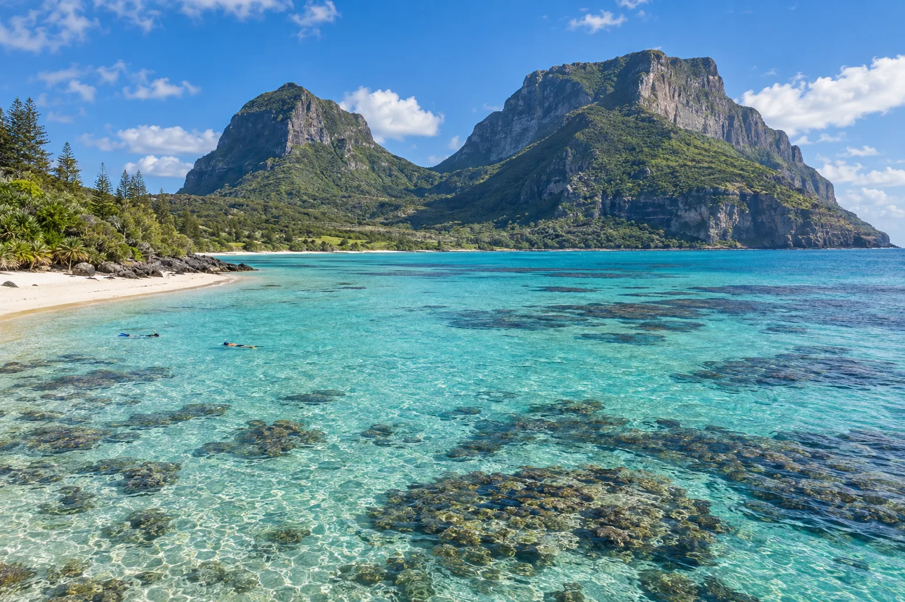

Île Lord Howe
Nouvelle-Galles du Sud, Australie · snorkeling, plongée, kayak

Île classée au patrimoine mondial avec le récif corallien le plus austral du monde. Visiteurs limités.
- Lieu
- Nouvelle-Galles du Sud, Australie
- Niveau
- Débutant
- Activités
- snorkeling, plongée, kayak
- Type d'eau
- Mer / océan
- Coordonnées
- -31.55, 159.08 (position approximative du secteur)
Dangers à connaître
- Courants hors du lagon.
- Corail protégé.
Le conseil d'Ocean Buddy
Le nombre de visiteurs est limité : réserve très tôt.
Ouvrir dans Ocean Buddy Télécharger sur l'App Store
Source : Fiche Ocean Buddy · septembre 2026 · à vérifier localement.